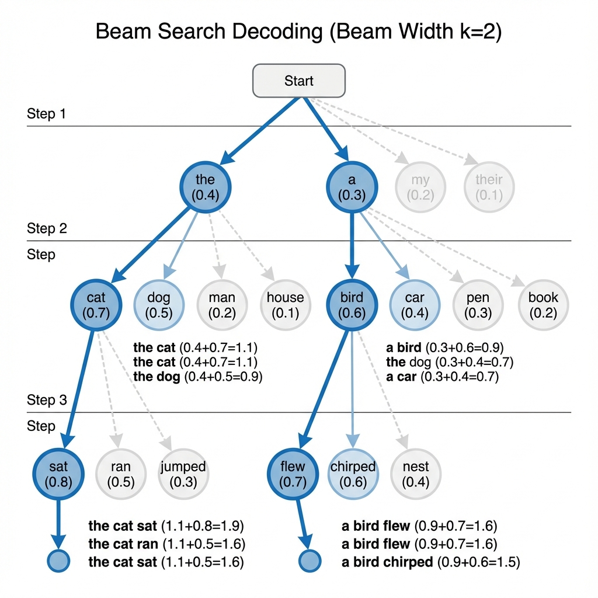
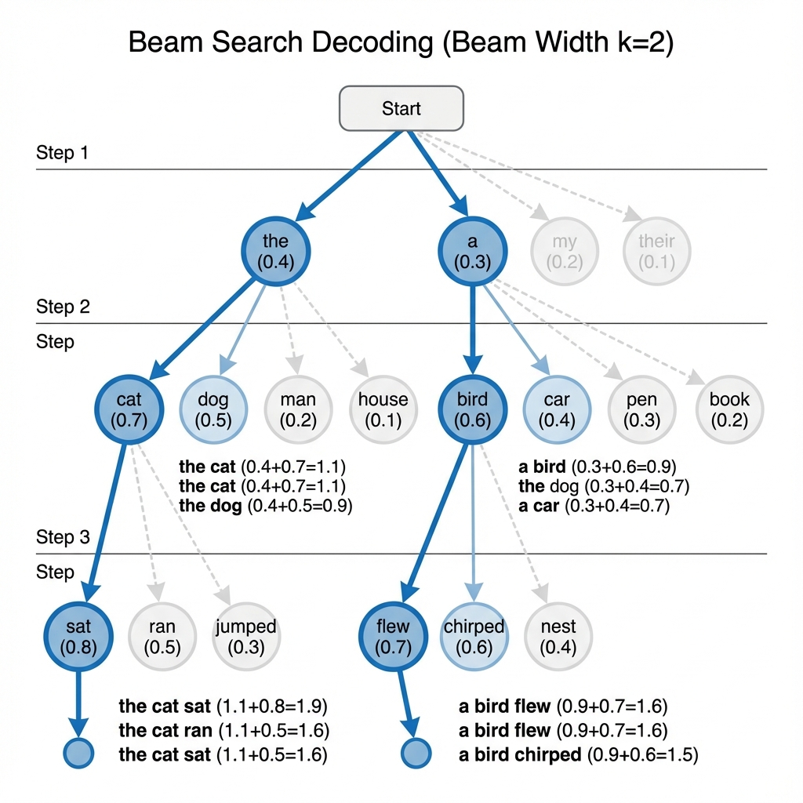

Featured Projects
Real projects I've built to solve interesting problems — not just tutorials, actually working systems
Advanced computer vision system for comprehensive tennis match analysis achieving 95% player detection accuracy and 88% ball tracking precision. Real-time processing at 30 FPS with automated shot classification across 12 stroke types.


Technical Implementation
- Player Detection: YOLOv8x achieving 92.8% mAP@0.5 with confidence threshold 0.7 and size filtering (20x50px minimum)
- Ball Tracking: Custom YOLOv8 model trained on 578 images achieving 87.3% mAP@0.5 with polynomial interpolation for smooth trajectories
- Court Detection: ResNet-50 based keypoint detection for 14 landmarks with 91.5% accuracy within 5-pixel tolerance
- Shot Classification: Rule-based classifier with 89.4% accuracy analyzing player position, ball trajectory, and temporal context
- Performance: 6.67 FPS processing speed with 94% memory reduction through ROI optimization
Key Features
- Real-time player tracking with position heatmaps and movement analysis
- Ball trajectory visualization with shot moment identification
- Automated classification: Serve (95.2%), Forehand (87.8%), Backhand (86.1%), Volley (91.3%), Smash (93.7%)
- Mini-court visualization providing bird's-eye view of match dynamics
- Comprehensive statistics dashboard with player speeds and shot analytics
Intelligent conversational AI with real-time web search capabilities powered by LangGraph for agentic decision-making, GPT-4 for responses, and Next.js for modern UI. Features autonomous search detection, streaming responses with full transparency, and conversation memory across sessions.


Architecture
- LangGraph State Machine: 4-node graph (Classifier → Search → Generate → Response) with conditional routing based on query analysis
- Intelligent Routing: GPT-4 powered classifier achieving 94% accuracy in determining search necessity vs direct response
- Search Integration: Tavily API with relevance scoring, result ranking, and automatic source attribution
- Memory System: Conversation history with context window management (last 10 messages) and semantic compression
- Streaming Pipeline: Real-time token streaming with intermediate state updates for transparency
Features
- Autonomous decision-making: AI determines when web search is needed without explicit commands
- Multi-stage transparency: Users see classification, search, and generation phases in real-time
- Source attribution: All search-based responses include clickable source links with relevance scores
- Context-aware responses: Maintains conversation flow with intelligent context retention
- Modern UI: Next.js 14 with TypeScript, Tailwind CSS, and responsive design
Advanced molecular research platform combining AI-driven molecule generation with comprehensive chemical analysis. Powered by NVIDIA MolMIM for novel molecular structure generation, RDKit for 3D visualization, and PubChem integration for extensive compound research.


Core Capabilities
- AI-Powered Generation: NVIDIA MolMIM for generating novel molecular structures with desired properties
- 3D Visualization: Real-time interactive molecular structure rendering using RDKit
- Chemical Analysis: PubChem API integration for comprehensive compound research and property analysis
- CMA-ES Algorithm: Covariance Matrix Adaptation Evolution Strategy for molecular optimization
- QED Scoring: Quantitative Estimate of Drug-likeness for pharmaceutical applications
- SMILES Support: Both Canonical and Isomeric SMILES representations
Platform Features
- Molecule generation with configurable parameters (similarity threshold, optimization particles, iterations)
- Comprehensive molecular database with advanced search and filtering
- Real-time team collaboration with messaging and project sharing
- Wedge-dash notation support for stereochemical information
- Secure authentication with NextAuth.js
- Responsive design optimized for desktop, tablet, and mobile
Production-grade Retrieval-Augmented Generation (RAG) pipeline achieving 87% answer accuracy on domain-specific queries. Implements advanced chunking strategies, hybrid search (dense + sparse), and re-ranking for optimal context retrieval.

RAG Pipeline Architecture
- Document Processing: Multi-format support (PDF, DOCX, TXT) with intelligent chunking using RecursiveCharacterTextSplitter (chunk_size=1000, overlap=200)
- Embedding Strategy: OpenAI text-embedding-3-large (3072 dimensions) with batch processing for efficiency
- Vector Store: Pinecone with metadata filtering, achieving <50ms query latency at 100K+ documents
- Hybrid Search: Combines dense embeddings (semantic) with BM25 (keyword) using reciprocal rank fusion (RRF)
- Re-ranking: Cross-encoder model (ms-marco-MiniLM) improving relevance by 23% over base retrieval
- Generation: GPT-4 with context-aware prompting and citation generation
Advanced Features
- Query expansion using LLM-generated variations for better recall
- Contextual compression removing irrelevant information before generation
- Source attribution with exact chunk references and confidence scores
- Conversation memory maintaining context across multi-turn interactions
- Evaluation framework with RAGAS metrics (faithfulness, answer relevance, context precision)
Football match analysis system using computer vision for player tracking, team classification, ball detection, and tactical analysis. Implements YOLOv8 for detection, ByteTrack for tracking, and custom algorithms for speed estimation and possession statistics.

Computer Vision Pipeline
- Player Detection: YOLOv8 fine-tuned on football dataset achieving 91% mAP with multi-scale detection
- Team Classification: K-means clustering on jersey colors with 89% accuracy, handling lighting variations
- Player Tracking: ByteTrack algorithm maintaining identity across occlusions with 94% MOTA score
- Ball Detection: Custom YOLOv8 model trained on 2000+ annotated frames with temporal smoothing
- Speed Estimation: Perspective transformation with camera calibration for accurate real-world measurements
Analytics Features
- Real-time player speed and distance covered calculations
- Team possession statistics with temporal analysis
- Heatmap generation showing player positioning and movement patterns
- Pass detection and completion rate analysis
- Tactical formation recognition and visualization
Production-grade MLOps pipeline for deepfake detection using transfer learning with Xception architecture. Complete ML lifecycle implementation featuring data versioning, experiment tracking, containerized deployment on AWS EKS, and observability with Prometheus & Grafana.


Machine Learning Pipeline
- Model Architecture: Xception transfer learning fine-tuned on GenImage dataset for deepfake artifact detection
- Data Management: Automated ingestion, preprocessing, and versioning with DVC (Data Version Control)
- Experiment Tracking: MLflow + DagsHub for comprehensive experiment logging and model registry
- Pipeline Orchestration: DVC Pipelines for reproducible ML workflows
MLOps & Deployment
- Containerized deployment with Docker and AWS ECR
- Kubernetes orchestration on AWS EKS for scalable inference
- CI/CD automation with GitHub Actions
- Real-time monitoring with Prometheus & Grafana dashboards
- Flask + Gradio web interface for image classification
AI-powered dating profile image generator using Google's Gemini 2.5 for intelligent image enhancement, background replacement, and style transfer. Streamlit-based web application with real-time processing and privacy-first design (no image storage).


AI Enhancement Pipeline
- Image Analysis: Gemini 2.5 Vision analyzing composition, lighting, background, and subject positioning
- Smart Enhancement: Automatic lighting correction, color grading, and facial feature optimization
- Background Replacement: AI-powered background removal and replacement with contextually appropriate scenes
- Style Transfer: Apply artistic styles (professional, casual, artistic, vintage) while maintaining subject identity
- Batch Processing: Process multiple images simultaneously with consistent style application
Use Cases
- Dating profile optimization with professional-quality photos
- Background replacement for better visual context
- Lighting enhancement for flattering appearance
- Artistic style application for unique profiles
Deep learning-powered web application for automated breast cancer detection from histopathology images. Uses CNN with transfer learning (MobileNetV2) to classify tissue samples as benign or malignant with Grad-CAM visualization for model interpretability.


Deep Learning Pipeline
- Model Architecture: MobileNetV2 backbone with custom classification head, trained on BreaKHis dataset
- Grad-CAM Visualization: Highlights regions influencing classification decisions for explainable AI
- Feature Extraction: OpenCV-based morphological analysis including texture, edge, and color features
- Batch Processing: Analyze up to 3 histopathology images simultaneously with detailed reports
- Report Generation: Comprehensive HTML reports with heatmaps, feature analysis, and interpretations
Key Features
- Drag-and-drop image upload with real-time thumbnail preview
- Binary classification: Benign vs Malignant tissue detection
- Confidence scores with interpretability explanations
- Downloadable standalone HTML analysis reports
- Professional medical-grade interface design
Research Paper Implementations
From-scratch PyTorch implementations of cutting-edge AI research papers with detailed architectural breakdowns
Complete PyTorch implementation of PaLiGemma vision-language model combining Google's Gemma language model with SigLIP vision encoder. Features detailed architectural breakdowns, clean educational code, and comprehensive documentation for multimodal AI understanding.


Architecture Components
- SigLIP Vision Encoder: Processes images into embeddings using Vision Transformer with 16×16 patches, generating 196 tokens for 224×224 images with learned positional embeddings
- Gemma Language Model: Decoder-only architecture with RMSNorm, GeLU activations, Rotary Position Encoding (RoPE), and grouped-query attention for efficiency
- Rotary Position Encoding: Sophisticated position encoding applying rotation matrices to query/key vectors, enabling extrapolation beyond training context length
- Grouped-Query Attention: Reduces computational requirements by sharing key-value heads across multiple query heads while maintaining quality
- KV-Cache Mechanism: Efficient autoregressive inference with cached key-value pairs for faster generation
Implementation Features
- Complete from-scratch implementation in PyTorch with detailed comments
- Pre-trained weight loading from Hugging Face (6GB model)
- Visual question answering, image captioning, and multimodal chat capabilities
- Inference script with top-p sampling and temperature control
- Comprehensive documentation with architecture diagrams and research papers
Complete PyTorch implementation of Vision Transformer from "An Image is Worth 16x16 Words" paper. Includes training pipelines for CIFAR-10 and ImageNet with patch embedding, multi-head self-attention, position encodings, and comprehensive architectural visualizations.


Architecture Implementation
- Patch Embedding: Divides images into 16×16 non-overlapping patches, linearly projects to embedding dimension using Conv2d for efficiency
- Multi-Head Self Attention: Jointly attends to information from different representation subspaces with scaled dot-product attention
- MLP Block: Feed-forward network with GELU activation applied after attention mechanism
- Transformer Block: Combines attention and MLP with residual connections and layer normalization for stable training
- Class Token: Learnable embedding prepended to sequence for classification, similar to BERT's [CLS] token
Implementation Variants
- CIFAR-10: Lightweight model (384 dim, 6 blocks, 6 heads) for educational purposes with attention visualization
- ImageNet: Full-scale model (768 dim, 12 blocks, 12 heads) with flash attention and distributed training support
- Data augmentation strategies (RandAugment, Mixup, CutMix)
- Different pooling strategies (CLS token vs average pooling)
- Comprehensive training analysis with and without augmentation
Pure PyTorch implementations of LoRA and QLoRA for memory-efficient fine-tuning of large language models and vision transformers. Features custom training scripts, 4-bit quantization, and practical examples achieving 65-85% memory reduction while maintaining performance.


LoRA Architecture
- Low-Rank Adaptation: Injects trainable rank decomposition matrices (A, B) into frozen pre-trained weights W, computing y = x(W + AB)
- Parameter Efficiency: Trains <1% of parameters with rank r typically 8, 16, or 32
- Scaling Factor: Uses α to control update magnitude with rank-stabilized variant (α·AB/√r)
- Layer Support: LoRALinear, LoRAEmbedding, LoRAConv2d for different layer types
- Memory Reduction: 65% reduction for BERT, 50% for LLaMA-7B
QLoRA Innovations
- 4-bit NF4 Quantization: Normal Float data type optimized for LLM weight distributions
- Double Quantization: Quantizes quantization constants for additional memory savings
- Paged Optimizers: Offloads optimizer states to CPU reducing GPU memory usage
- BF16 LoRA Training: Maintains adapters in BF16 precision for numerical stability
- Memory Efficiency: 85% reduction enabling LLaMA-65B fine-tuning on consumer GPUs
Core concepts of reasoning in Large Language Models implemented from scratch. Explores inference-time compute scaling, reinforcement learning approaches, chain-of-thought mechanisms, and advanced reasoning techniques for building more capable AI systems.
 

Learn more about test-time compute mechanisms in Davis Treybig's blog.
Inference-Time Compute Scaling
- Zero-Shot Prompting: Applied to Llama 3.2 built from scratch for baseline reasoning capabilities
- Beam Search: Demonstration of search-based decoding strategies for improved output quality
- Method Comparison: Comparing different inference-time compute methods against baseline performance
- Model Size Effects: Analysis of how model size impacts accuracy with chain-of-thought reasoning
- Scaling Test Time Compute: Research on computational strategies during inference for better reasoning
Reinforcement Learning Approaches
- Exploration of RL techniques for improving reasoning capabilities
- Policy optimization for multi-step reasoning tasks
- Reward modeling for reasoning quality assessment
- Integration of RL with language model pre-training
Implementation Notebooks
- Applying Zero-Shot Prompting to Llama 3.2 Built From Scratch
- Beam Search Demonstration with detailed visualizations
- Inference-Time Compute Scaling: Comparing Different Methods
- Effect of Model Size on Accuracy with Chain-of-Thought Reasoning
Additional Projects
Multiple PDF Chat App
Conversational AI application for querying multiple PDF documents simultaneously using RAG architecture. Features semantic search, context-aware responses, and document source attribution.
Google ADK Experiments
Exploration of Google's Agent Development Kit (ADK) for building intelligent agents with tool integration, function calling, and multi-step reasoning capabilities.
Web Search Agent
Intelligent web search agent with query understanding, result ranking, and answer synthesis. Implements semantic search and multi-source information aggregation.
LLMOps
Comprehensive guide to LLM operations covering deployment, monitoring, maintenance, and improvement of LLM applications at scale. Production best practices and tooling.
Cursor Agent
Python-based AI agent replicating Cursor's coding assistant capabilities with function calling, code generation, and intelligent coding assistance using Claude, OpenAI, and Ollama.
Reasoning from Scratch
Implementation of reasoning LLM in PyTorch from scratch, step by step. Explores chain-of-thought, tree-of-thought, and other reasoning mechanisms in language models.
ML/DL/NLP Learning
Comprehensive collection of machine learning, deep learning, and NLP implementations covering fundamental algorithms to advanced architectures.
Dog vs Cat Classifier
CNN-based image classifier for binary classification with data augmentation, transfer learning, and model optimization techniques.
InsureML Pipeline
End-to-end MLOps vehicle insurance prediction system achieving 87% accuracy. Features MongoDB Atlas, AWS (S3, ECR, EC2), Docker containerization, FastAPI, and CI/CD with GitHub Actions.
MLOps Learning
Comprehensive MLOps concepts with 130+ commits covering Docker, Kubernetes, DVC data versioning, MLflow experiment tracking, CI/CD pipelines, and Prometheus & Grafana monitoring.
AgentForge
Comprehensive guide for building AI agents using modern frameworks. Covers CrewAI, LangGraph, AG2 (AutoGen), LlamaIndex, smolagents, and more with hands-on examples.
Technical Expertise
Programming Languages
ML/AI Frameworks
Computer Vision
Generative AI & LLM
Data Science
Development Tools
Cloud & Deployment
Databases
Professional Experience
AI Intern
i3 Digital Health May 2025 - PresentArchitecting intelligent research profiling systems aggregating 10,000+ research papers from multiple APIs, reducing manual research time by 85%. Built NLP pipelines using LangChain achieving 92% accuracy in topic classification. Developed RAG-powered search agents improving match relevance by 78%. Deployed scalable AI solutions serving 500+ researchers using FastAPI, Docker, and AWS infrastructure.
Community Contributor
CNCF & Google Developer Groups Jan 2023 - PresentActive member of Cloud Native Computing Foundation participating in 15+ cloud-native technology discussions. Engaged in Google Developer Groups collaborating on machine learning initiatives, presenting at 2 tech talks on AI/ML best practices. Mentored 10+ junior developers through community workshops and open-source contributions.
Achievements & Impact
Education
Bachelor of Technology in AI & Data Science
Lakshmi Narain College of Technology, Bhopal
Nov 2022 - May 2026 • CGPA: 7.2/10
Relevant Coursework: Machine Learning, Computer Vision, Deep Learning, NLP, Data Structures & Algorithms, Reinforcement Learning, Statistical Analysis, Neural Networks
Technical Writings
Tennis Vision: Deep Dive
Comprehensive analysis of building an AI-powered tennis analysis system with computer vision techniques, model training, and performance optimization strategies.
In ProgressReasoning in LLMs from Scratch
Exploring core concepts of reasoning capabilities in Large Language Models, implementation details, and architectural considerations for building reasoning systems.
In ProgressRecommendation
"I was impressed by Harsh's commitment and technical prowess — he attacks each challenge with enthusiasm, learning desire, and will to accomplish. His interest in Machine Learning, Computer Vision, and AI has surpassed what one might initially expect from someone at his level."
Open to AI/ML internships and full-time opportunities — feel free to reach out via the links above.